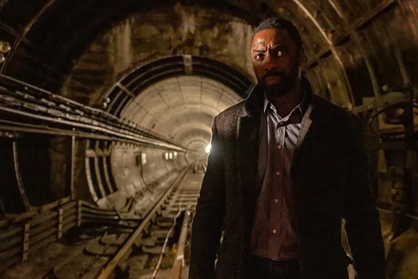

A Baleia, Darren Aronofsky
Marcado por dor e culpa, o professor de redação, Charlie, dá aulas on-line, enquanto vive recluso em seu apartamento claustrofóbico. Com obesidade crônica e autodestrutivo, ele reflete sobre os erros do passado e tenta reconciliar com sua filha, com quem não conversa há anos. Charlie anseia por reconexão e comunicação. Mas será que o amor e o perdão serão suficientes para apagar o que já foi feito?
John Wick 4: Baba Yaga, Chad Stahelski
Condenado pela tirânica Alta Cúpula a fugir pelo resto da vida, John Wick embarca em uma missão de fúria suicida para decidir seu destino após a carnificina impiedosa em “John Wick 3: Parabellum”. Por fim, a jornada violenta de John, alimentada por vingança e dor, acaba o levando a um confronto fatídico com seus antigos empregadores, os mestres do crime que o forçaram ao exílio. Enquanto isso, velhos companheiros enfrentam as consequências brutais da amizade e adversários poderosos e bem-relacionados surgem para colocar a cabeça de Wick em uma bandeja. Mas falar é fácil, agora as armas têm a palavra final. O Bicho-Papão, o implacável messias da morte, pode fazer valer cada bala nesta luta sangrenta e definitiva pela liberdade?
Luther: O Cair da Noite
Devido ao seu comportamento errático, o policial John Luther (Elba) é encarcerado em um presídio de segurança máxima. Após fugir da penitenciária, o protagonista descobre que o bilionário serial killer David Robey (Serkis), seu inimigo, usa suas habilidades na informática para provocar uma série de mortes na Inglaterra.
Babilônia, Damien Chazelle

Em Bel-Air, Los Angeles, no ano de 1926, o imigrante mexicano Manny ajuda a transportar um elefante para uma festa debochada e imoral na mansão do executivo Don Wallach. Lá ele se apaixona por Nellie LaRoy, uma autodeclarada estrela impetuosa de New Jersey. Na festa também estão presentes a cantora de cabaré Lady Fay Zhu e o trompetista de jazz Sidney Palmer. Manny, ainda, faz amizade com Jack Conrad, um astro do cinema problemático, que o ajuda e encontrar emprego em um estúdio de cinema. Ao longo de anos, o filme acompanha a trajetória e o declínio dessas personalidades, conforme a indústria do entretenimento se transforma.
Air: A História Por Trás do Logo, Ben Affleck
Em 1984, Sonny Vaccaro é responsável por escolher os atletas mais promissores que vão assinar a linha de basquete da Nike. Com um orçamento curto e a pressão de um contrato que pode decidir o futuro da empresa, ele vê em Michael Jordan o que ninguém vê: uma futura lenda do esporte. O problema é que a marca favorita de Jordan é a Adidas, que tem uma boa proposta na manga. Vaccaro terá de afiar o discurso para convencer seu chefe a investir recursos e Jordan e sua família a fecharem a parceria que se tornará a mais lucrativa da indústria de roupas e calçados esportivos de todos os tempos.
Agente Infiltrado
O agente secreto Adam Franco (Lenoir) é encarregado de investigar um terrorista sudanês que se alia ao mafioso Victor Pastore (Cantona). Cabe a Franco se infiltrar como guarda-costas do filho pequeno de Pastore para obter informações. Porém, a missão é prejudicada quando o garoto é sequestrado e precisa da ajuda do agente.
The Last Kingdom: Seven Kings Must Die

Com a morte do Rei Edward, o oficial militar Uhtred de Bebbanburg (Dreymon) parte em uma jornada com seus companheiros para tentar unificar a Inglaterra, já fragmentada por diversos conflitos por territórios. No meio do caminho, Uhtred faz novas alianças, mas ao mesmo tempo desperta a ira de novos inimigos.
Power Rangers: Agora e Sempre
Durante uma batalha contra a vilã Rita Repulsa, a ranger amarela Trini Kwan (Thuy Trang) morre em combate. Agora, os remanescentes Billy (Yost), Zack (Jones), Rocky (Cardenas) e Kat (Sutherland), os rangers azul, preto, vermelho e rosa respectivamente, contam com a ajuda da filha de Trini, Minh (Kersh), para derrotar Rita e honrar a memória da mãe.
Sangue e Ouro
Nos momentos finais da 2ª Guerra, o alemão desertor Heinrich (Maaser) é condenado ao enforcamento por seus superiores. Entretanto, ele é salvo pela fazendeira Elsa (Hacke), uma mulher que teve o irmão raptado pelos nazistas. Agora, os dois embarcam numa jornada de vingança e caça a um tesouro escondido.
Vítima x Suspeita
Nancy já havia abordado a cultura do estupro nos EUA em um documentário anterior, Rede de Abusos (2019), também disponível na Netflix. Em Vítima x Suspeita, a cineasta e Rachel analisam vídeos de depoimentos e conversa com advogadas, vítimas e seus familiares para tentar descobrir quais os motivos de policiais não investigarem acusações de estupro.